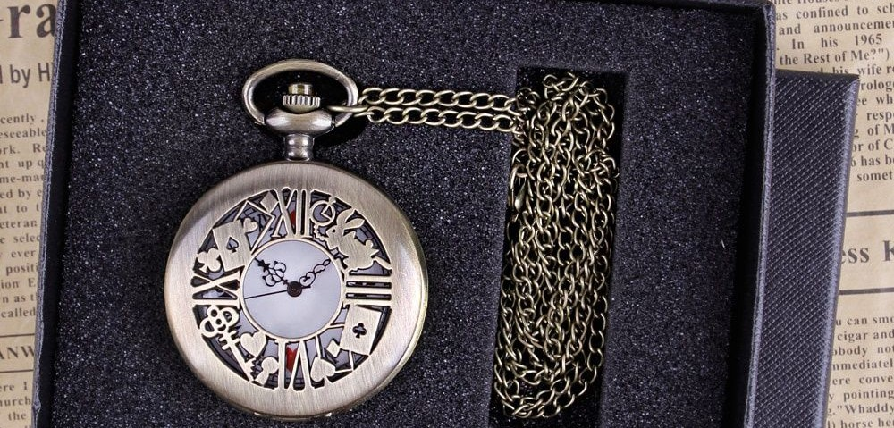
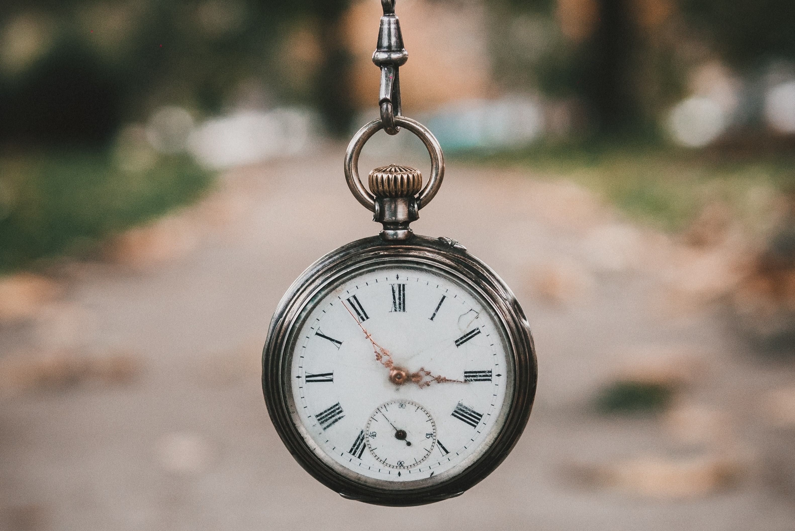
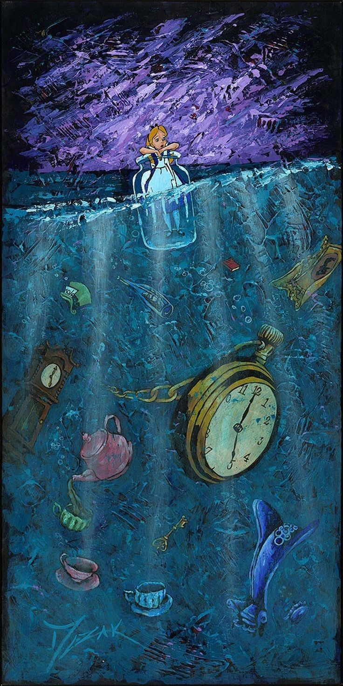
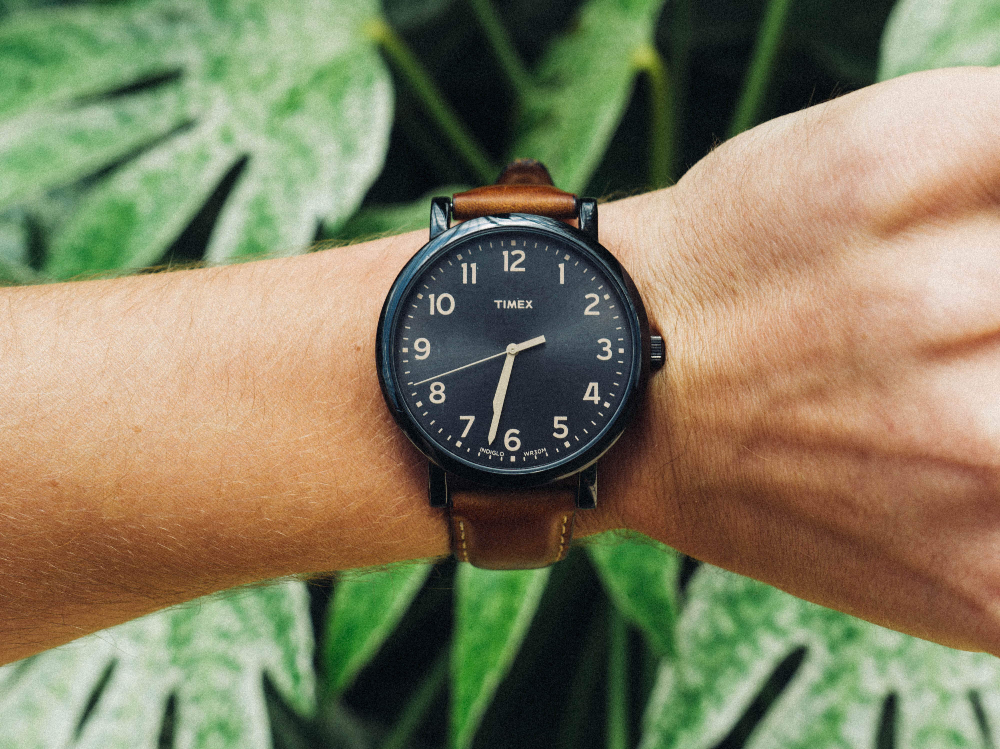
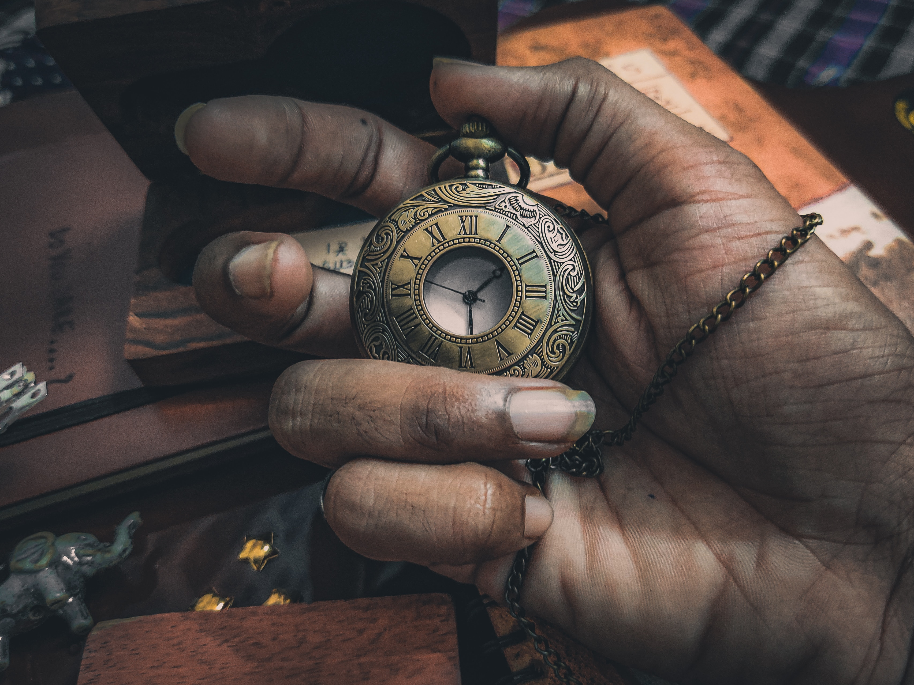
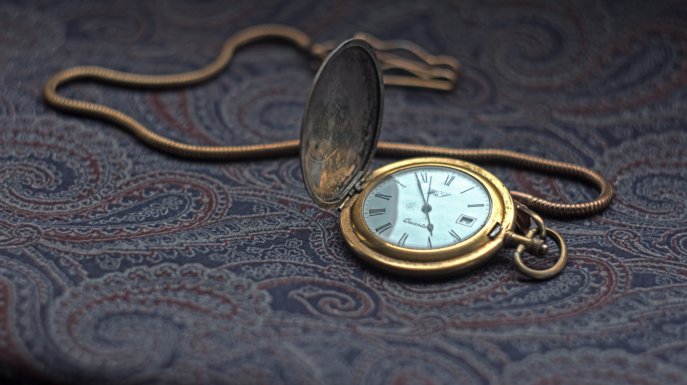
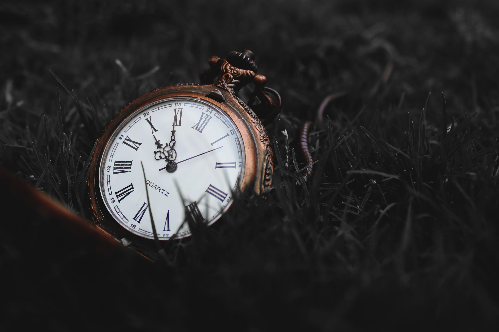
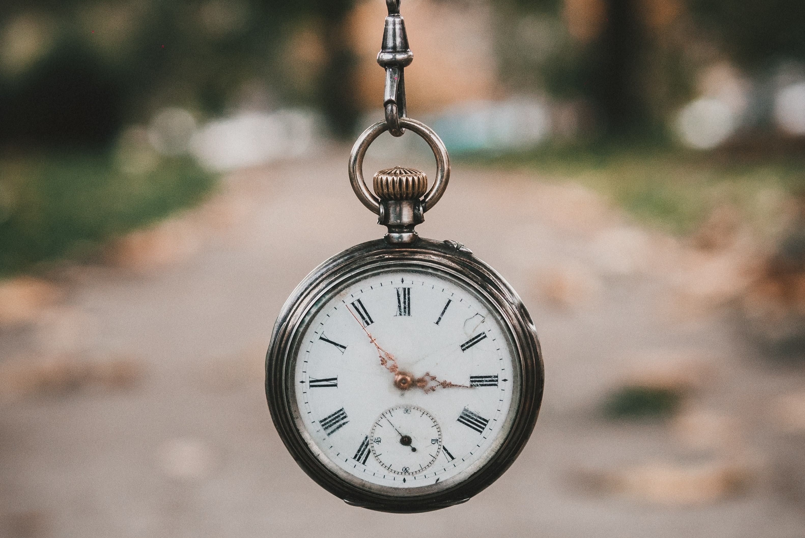
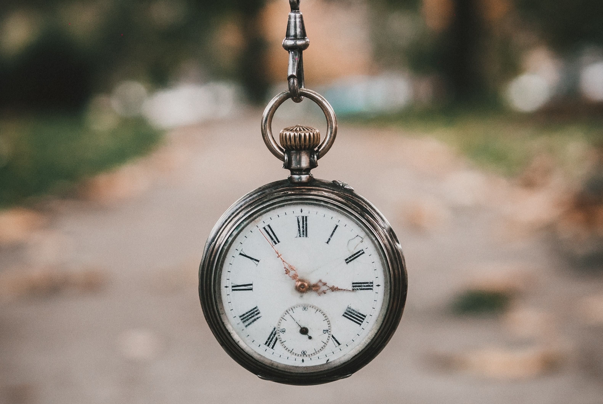

search
favorite_border
shopping_cart
person_outline



RELOJOARIA ALICE NO PAÍS DAS MARAVILHAS
Relógio de pulso unissex

Relógio de pulso unissex com pulseira marrom
Relógio de bolso dourado

Relógio de bolso vintage

Relógio de bolso com corrente dourada

Relógio de bolso relíquia
 
